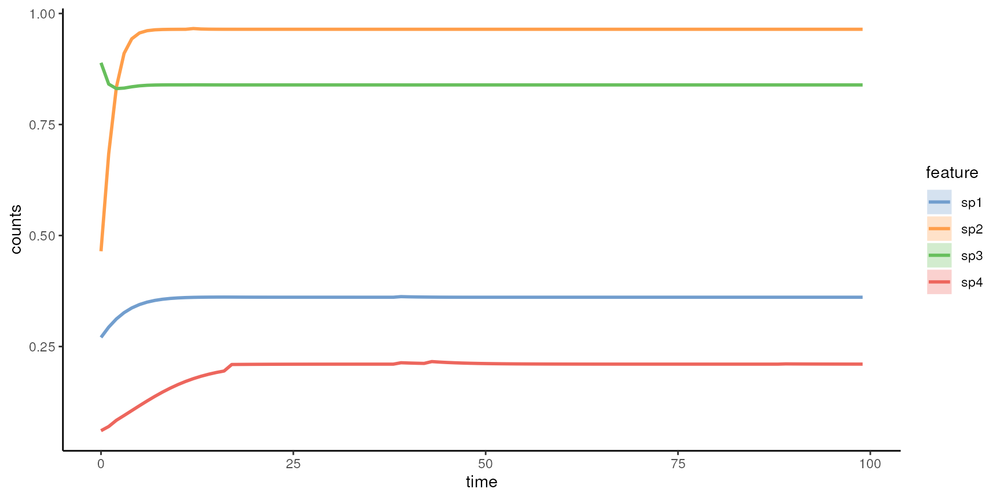
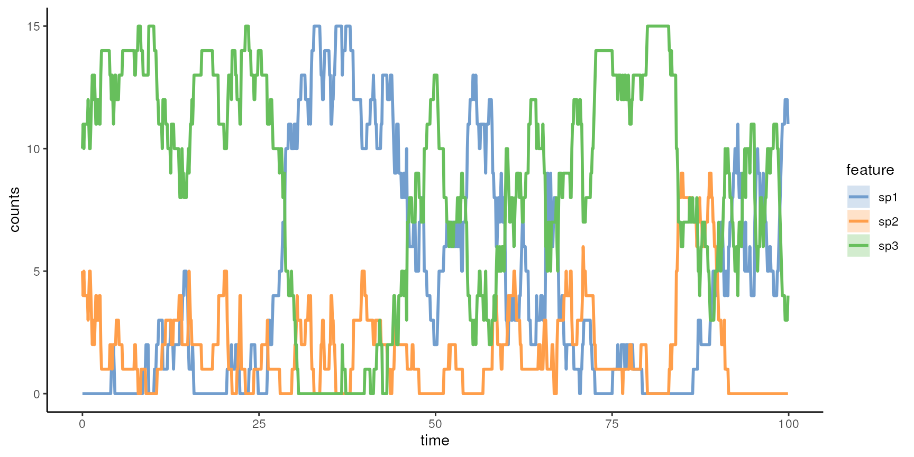
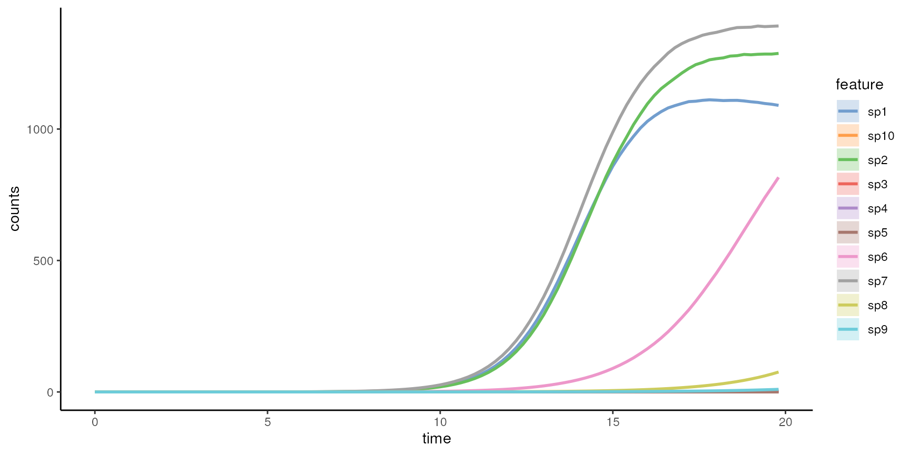

vignettes/miaSim.Rmd
miaSim.RmdmiaSim implements tools for simulating microbial
community data based on various ecological models. These can be used to
simulate species abundance matrices, including time series. A detailed
function documentation can be viewed at the function
reference page
Install the Bioconductor release version with
if (!requireNamespace("BiocManager", quietly = TRUE))
install.packages("BiocManager")Load the library
Some of the models rely on interaction matrices that represents interaction heterogeneity between species. The interaction matrix can be generated with different distributional assumptions.
Generate interactions from normal distribution:
A_normal <- powerlawA(n_species = 4, alpha = 3)Generate interactions from uniform distribution:
The generalized Lotka-Volterra simulation model generates time-series assuming microbial population dynamics and interaction.
glvmodel <- simulateGLV(n_species = 4, A = A_normal, t_start = 0,
t_store = 100, t_end=100, stochastic = FALSE, norm = FALSE)
miaViz::plotSeries(glvmodel, "time")
Ricker model is a discrete version of the gLV:
rickermodel <- simulateRicker(n_species=4, A = A_normal, t_end=100, norm = FALSE)The number of species specified in the interaction matrix must be the same as the species used in the models.
Hubbell Neutral simulation model characterizes diversity and relative abundance of species in ecological communities assuming migration, births and deaths but no interactions. Losses become replaced by migration or birth.
hubbellmodel <- simulateHubbell(n_species = 8, M = 10, carrying_capacity = 1000,
k_events = 50, migration_p = 0.02, t_end = 100)One can also simulate parameters for the Hubbell model.
hubbellmodelRates <- simulateHubbellRates(x0 = c(0,5,10),
migration_p = 0.1, metacommunity_probability = NULL, k_events = 1,
growth_rates = NULL, norm = FALSE, t_end=100)
miaViz::plotSeries(hubbellmodelRates, "time")
The Self-Organised Instability (SOI) model generates time series for communities and accelerates stochastic simulation.
soimodel <- simulateSOI(n_species = 4, carrying_capacity = 1000,
A = A_normal, k_events=5, x0 = NULL, t_end = 150, norm = TRUE)Stochastic logistic model is used to determine dead and alive counts in community.
logisticmodel <- simulateStochasticLogistic(n_species = 5)
miaViz::plotSeries(logisticmodel, x = "time")
model_transformed <- mia::transformCounts(logisticmodel, method = "relabundance")The consumer resource model requires the use of the
randomE function, which returns a matrix containing the
production rates and consumption rates of each species. The resulting
matrix is used as a determination of resource consumption
efficiency.
crmodel <- simulateConsumerResource(n_species = 2,
n_resources = 4,
E = randomE(n_species = 2, n_resources = 4))
miaViz::plotSeries(crmodel, "time")
# example to get relative abundance and relative proportion of resources
#'norm = TRUE' can be added as a parameter.
# convert to relative abundance
ExampleCR <- mia::transformCounts(crmodel, method = "relabundance")
miaViz::plotSeries(ExampleCR, "time")
#Recommended standard way to generate a set of n simulations (n=2 here) from a given model
simulations <- lapply(seq_len(2), function (i) {do.call(simulateConsumerResource, params)})
# Visualize the model for the first instance
miaViz::plotSeries(simulations[[1]], "time")
# List state for each community (instance) at its last time point;
# this results in instances x species matrix; means and variances per species can be computed col-wise
communities <- t(sapply(simulations, function (x) {assay(x, "counts")[, which.max(x$time)]}))
# Some more advanced examples for hardcore users:
# test leave-one-out in CRM
.replaceByZero <- function(input_list) { # params_iter$x0 as input_list
if (!all(length(input_list) == unlist(unique(lapply(input_list, length))))) {
stop("Length of input_list doesn't match length of element in it.")
}
for (i in seq_along(input_list)) {
input_list[[i]][[i]] <- 0
}
return(input_list)
}
.createParamList <- function(input_param, n_repeat, replace_by_zero = FALSE) {
res_list <- vector(mode = "list", length = n_repeat)
for (i in seq_len(n_repeat)) {
res_list[[i]] <- input_param
}
res_list <- lapply(seq_len(n_repeat), function (i) {input_param})
}
# example of generateSimulations
# FIXME: reduce computational load by lowering the number of species and timesteps in the demo
params <- list(
n_species = 10,
n_resources = 5,
E = randomE(
n_species = 10, n_resources = 5,
mean_consumption = 1, mean_production = 3
),
x0 = rep(0.001, 10),
resources = rep(1000, 5),
monod_constant = matrix(rbeta(10 * 5, 10, 10), nrow = 10, ncol = 5),
inflow_rate = .5,
outflow_rate = .5,
migration_p = 0,
stochastic = TRUE,
t_start = 0,
t_end = 20,
t_store = 100,
growth_rates = runif(10),
norm = FALSE
)
# Test overwrite params
.createParamList <- function(input_param, n_repeat, replace_by_zero = FALSE) {
res_list <- unname(as.list(data.frame(t(matrix(rep(input_param, n_repeat), nrow = n_repeat)))))
}
paramx0 <- .createParamList(input_param = rep(0.001, 10), n_repeat = 10,
replace_by_zero = TRUE)
paramresources <- .createParamList(input_param = rep(1000, 5), n_repeat = 10)
params_iter <- list(x0 = paramx0, resources = paramresources)
simulations <- lapply(seq_len(2), function (i) {do.call(simulateConsumerResource, params)})
simulations_2 <- .generateSimulations(
model = "simulateConsumerResource",
params_list = params, param_iter = params_iter, n_instances = 1, t_end = 20
)
estimatedA <- .estimateAFromSimulations(simulations, simulations_2, n_instances = 1,
scale_off_diagonal = 1, diagonal = -0.5, connectance = 0.2
) / 1000
# Using these parameters with a specified simulator
m <- simulateGLV(n_species = 10, x0 = params$x0,
A = estimatedA, growth_rates = params$growth_rates, t_end = 20, t_store = 100)
miaViz::plotSeries(m, "time") # Plotting
The simulation functions gives TreeSummarizedExperiment
[@TreeSE] object.
This provides access to a broad range of tools for microbiome analysis that support this format (see microbiome.github.io). More examples on can be found at OMA Online Manual. Other fields, such as rowData containing information about the samples, and colData, consisting of sample metadata describing the samples, or phylogenetic trees, can be added as necessary.
For instance, we can use the miaViz R/Bioconductor
package to visualize the microbial community time series.
micodymora Python package for microbiome simulation
R microbiome analysis package listing by Sudarshan Shetty
## R Under development (unstable) (2023-03-02 r83926)
## Platform: x86_64-pc-linux-gnu (64-bit)
## Running under: Ubuntu 22.04.2 LTS
##
## Matrix products: default
## BLAS: /usr/lib/x86_64-linux-gnu/openblas-pthread/libblas.so.3
## LAPACK: /usr/lib/x86_64-linux-gnu/openblas-pthread/libopenblasp-r0.3.20.so; LAPACK version 3.10.0
##
## locale:
## [1] LC_CTYPE=en_US.UTF-8 LC_NUMERIC=C
## [3] LC_TIME=en_US.UTF-8 LC_COLLATE=en_US.UTF-8
## [5] LC_MONETARY=en_US.UTF-8 LC_MESSAGES=en_US.UTF-8
## [7] LC_PAPER=en_US.UTF-8 LC_NAME=C
## [9] LC_ADDRESS=C LC_TELEPHONE=C
## [11] LC_MEASUREMENT=en_US.UTF-8 LC_IDENTIFICATION=C
##
## time zone: UTC
## tzcode source: system (glibc)
##
## attached base packages:
## [1] stats4 stats graphics grDevices utils datasets methods
## [8] base
##
## other attached packages:
## [1] miaSim_1.5.4 TreeSummarizedExperiment_2.1.4
## [3] Biostrings_2.67.0 XVector_0.39.0
## [5] SingleCellExperiment_1.21.0 SummarizedExperiment_1.29.1
## [7] Biobase_2.59.0 GenomicRanges_1.51.4
## [9] GenomeInfoDb_1.35.15 IRanges_2.33.0
## [11] S4Vectors_0.37.4 BiocGenerics_0.45.0
## [13] MatrixGenerics_1.11.0 matrixStats_0.63.0
## [15] BiocStyle_2.27.1
##
## loaded via a namespace (and not attached):
## [1] jsonlite_1.8.4 MultiAssayExperiment_1.25.7
## [3] magrittr_2.0.3 ggbeeswarm_0.7.1
## [5] farver_2.1.1 rmarkdown_2.20
## [7] fs_1.6.1 zlibbioc_1.45.0
## [9] ragg_1.2.5 vctrs_0.5.2
## [11] memoise_2.0.1 DelayedMatrixStats_1.21.0
## [13] RCurl_1.98-1.10 ggtree_3.7.1
## [15] htmltools_0.5.4 BiocNeighbors_1.17.1
## [17] deSolve_1.34 gridGraphics_0.5-1
## [19] sass_0.4.5 pracma_2.4.2
## [21] bslib_0.4.2 desc_1.4.2
## [23] plyr_1.8.8 DECIPHER_2.27.0
## [25] cachem_1.0.7 igraph_1.4.1
## [27] lifecycle_1.0.3 pkgconfig_2.0.3
## [29] rsvd_1.0.5 Matrix_1.5-3
## [31] R6_2.5.1 fastmap_1.1.1
## [33] GenomeInfoDbData_1.2.9 aplot_0.1.9
## [35] digest_0.6.31 ggnewscale_0.4.8
## [37] colorspace_2.1-0 patchwork_1.1.2
## [39] rprojroot_2.0.3 scater_1.27.6
## [41] irlba_2.3.5.1 textshaping_0.3.6
## [43] RSQLite_2.3.0 vegan_2.6-4
## [45] beachmat_2.15.0 labeling_0.4.2
## [47] fansi_1.0.4 polyclip_1.10-4
## [49] mgcv_1.8-42 compiler_4.3.0
## [51] bit64_4.0.5 withr_2.5.0
## [53] BiocParallel_1.33.9 viridis_0.6.2
## [55] DBI_1.1.3 highr_0.10
## [57] ggforce_0.4.1 MASS_7.3-58.2
## [59] poweRlaw_0.70.6 DelayedArray_0.25.0
## [61] permute_0.9-7 tools_4.3.0
## [63] vipor_0.4.5 beeswarm_0.4.0
## [65] ape_5.7 glue_1.6.2
## [67] nlme_3.1-162 grid_4.3.0
## [69] mia_1.7.7 cluster_2.1.4
## [71] reshape2_1.4.4 generics_0.1.3
## [73] gtable_0.3.1 tidyr_1.3.0
## [75] BiocSingular_1.15.0 tidygraph_1.2.3
## [77] ScaledMatrix_1.7.0 utf8_1.2.3
## [79] ggrepel_0.9.3 pillar_1.8.1
## [81] stringr_1.5.0 yulab.utils_0.0.6
## [83] splines_4.3.0 dplyr_1.1.0
## [85] tweenr_2.0.2 treeio_1.23.1
## [87] lattice_0.20-45 bit_4.0.5
## [89] tidyselect_1.2.0 DirichletMultinomial_1.41.0
## [91] scuttle_1.9.4 knitr_1.42
## [93] gridExtra_2.3 bookdown_0.32
## [95] xfun_0.37 graphlayouts_0.8.4
## [97] miaViz_1.7.3 stringi_1.7.12
## [99] ggfun_0.0.9 lazyeval_0.2.2
## [101] yaml_2.3.7 evaluate_0.20
## [103] codetools_0.2-19 ggraph_2.1.0
## [105] tibble_3.1.8 BiocManager_1.30.20
## [107] ggplotify_0.1.0 cli_3.6.0
## [109] systemfonts_1.0.4 munsell_0.5.0
## [111] jquerylib_0.1.4 Rcpp_1.0.10
## [113] parallel_4.3.0 pkgdown_2.0.7
## [115] ggplot2_3.4.1 blob_1.2.3
## [117] sparseMatrixStats_1.11.1 bitops_1.0-7
## [119] decontam_1.19.0 viridisLite_0.4.1
## [121] tidytree_0.4.2 scales_1.2.1
## [123] purrr_1.0.1 crayon_1.5.2
## [125] rlang_1.0.6